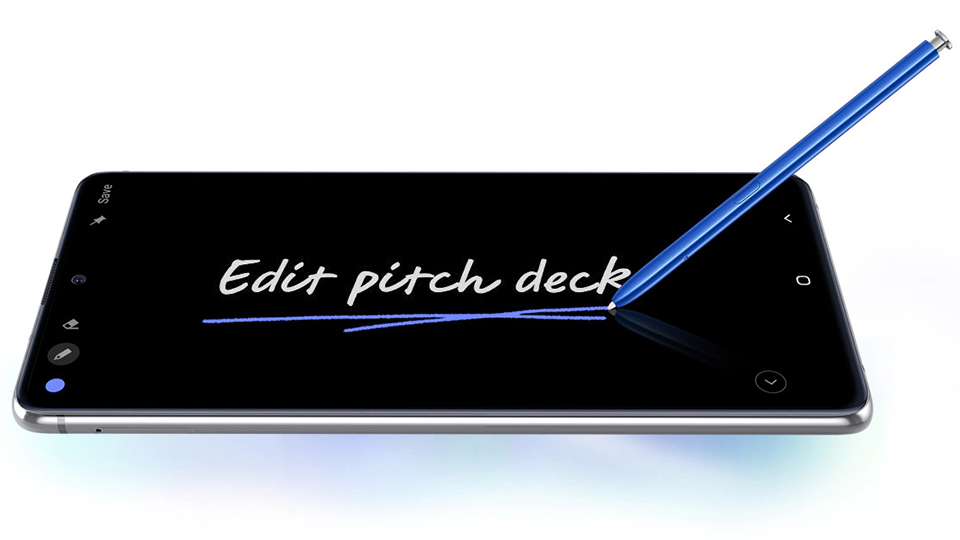

| Màn hình | 6.7", FHD+, Super AMOLED, 1080 x 2400 Pixel |
| Camera sau | 12.0 MP + 12.0 MP + 12.0 MP |
| Camera Selfie | 32.0 MP |
| RAM | 8 GB |
| Bộ nhớ trong | 128 GB |
| CPU | Exynos 9810 |
| GPU | ARM Mali-G72 MP18 |
| Dung lượng pin | 4500 mAh |
| Thẻ sim | 2, Nano SIM |
| Hệ điều hành | Android 10.0 |
| Xuất xứ | Việt Nam |
| Thời gian ra mắt | 1/2020 |
Đặc điểm nổi bật của Samsung Galaxy Note 10 Lite
Đánh giá chi tiết Samsung Galaxy Note 10 Lite
Chiếc Galaxy Note mới đã quay trở lại, Samsung Galaxy Note10 Lite đưa bạn đến trải nghiệm tuyệt vời của màn hình vô cực Infinity-O, bút S Pen danh tiếng, camera chuyên nghiệp và thời lượng pin dài bất tận trong một mức giá dễ chịu.
Vẻ đẹp của sự thanh lịch và thông minh
Samsung Galaxy Note10 Lite không chỉ đẹp, đây còn là chiếc điện thoại biểu tượng của sự đẳng cấp và thông minh. Phần khung kim loại cứng cáp, nhưng được hoàn thiện mượt mà và uốn cong thanh lịch cho bạn cảm giác cầm nắm hoàn hảo. Từ mặt lưng, cụm camera, màn hình Infinity-O cho đến bút S Pen đều được chế tác tỉ mỉ, toát lên vẻ cao cấp ở từng đường nét.
Một màn hình tuyệt mỹ chuẩn điện ảnh ngay trong tay bạn
Màn hình của dòng Galaxy Note luôn là những màn hình đẹp nhất thế giới smartphone. Màn hình Infinity-O của Galaxy Note10 Lite được chế tác gần như không viền, kích thước lớn 6,7 inch, độ phân giải Full HD+ và công nghệ Super AMOLED cao cấp. Bạn sẽ có một màn hình lớn hơn, tận hưởng nội dung trên không gian rộng hơn và ít bị mất tập trung hơn. Chất lượng hiển thị tuyệt mỹ giúp từng bức ảnh, từng đoạn phim trên Note10 Lite trở nên chân thực hơn bao giờ hết. Ngoài ra, một cảm biến vân tay được tích hợp ngay trên màn hình, cho bạn phương thức bảo mật tiện lợi và trực quan.
Làm việc và sáng tạo hiệu quả hơn với bút S Pen
Bút S Pen giống như là một “cây đũa phép” trên tay bạn, cho phép bạn giải phóng sức mạnh và quyền năng của Galaxy Note10 Lite. Khả năng ghi chú, viết vẽ hoàn hảo giúp bạn nhanh chóng phác thảo lại ý tưởng và lưu giữ, chia sẻ mọi lúc mọi nơi. Đầu bút mảnh 0,7mm và khả năng nhận diện 4096 mức độ lực tạo nên những thao tác mượt mà như bạn đang đặt bút trên giấy. Hơn nữa, với kết nối Bluetooth, S Pen có thể ra lệnh từ xa cho điện thoại những thao tác như chụp ảnh, xem ảnh và điều khiển nhạc mà không cần phải chạm vào điện thoại. 
Thời lượng pin suốt cả ngày dài
Viên pin dung lượng tới 4500 mAh của Galaxy Note10 Lite mang đến cho bạn thời gian sử dụng trọn một ngày dài ở cường độ cao. Dung lượng pin lớn kết hợp cùng trí tuệ nhân tạo tìm hiểu thói quen sử dụng của bạn để đưa ra những tinh chỉnh tối ưu cho thời lượng pin mỗi ngày lại tốt hơn.
Sạc một giờ để dùng cho cả ngày
Công nghệ sạc siêu nhanh của Galaxy Note10 Lite cho hiệu suất ấn tượng, chỉ mất một giờ sạc để đầy đủ năng lượng cho hoạt động của cả ngày. Kể cả khi có việc gấp, chỉ 15 – 30 phút sạc cũng cho bạn thời lượng pin để hoàn thành tốt công việc còn dang dở.
Sức mạnh để làm nhiều việc cùng lúc
Trong cuộc sống hiện đại, con người ngày càng năng động hơn và tất nhiên các thiết bị thông minh cũng phải thích ứng với điều đó. Galaxy Note10 Lite mang trên mình bộ vi xử lý 10nm mạnh mẽ, đi cùng 8GB RAM và 128GB bộ nhớ trong, đem tới cho bạn hiệu năng tốc độ cao ở mọi tác vụ cùng khả năng làm nhiều việc cùng lúc. Cho dù đang livestream, chơi game, tải tệp tin hay hoạt động đa nhiệm, Note10 Lite cũng đáp ứng hoàn hảo.
Bảo mật an toàn và tiện lợi
Với cả hai phương thức bảo mật nhận dạng khuôn mặt và cảm biến vân tay trong màn hình, Samsung Galaxy Note10 Lite cho phép bạn mở khóa theo cách tiện lợi, linh hoạt nhất.
Hệ thống camera chuyên nghiệp
Sẽ có 4 camera chất lượng cao trên Galaxy Note10 Lite đảm nhiệm vai trò chụp ảnh, quay video dành cho bạn. 4 camera này bao gồm camera chính 12MP lấy nét kép Dual Pixel; camera góc siêu rộng 12MP; camera tele 12MP và camera selfie 32MP. Chụp ảnh, quay video bằng camera trước hay sau, tất cả đều trở nên chuyên nghiệp ở Note10 Lite.
Thay đổi góc chụp chỉ sau một cú chạm
Khi chụp ảnh bằng Galaxy Note10 Lite, bạn không cần phải di chuyển nhưng vẫn có thể thay đổi góc chụp từ gần đến xa một cách dễ dàng. Camera chính 12MP sẽ chụp ảnh ở góc thông thường với chất lượng hình ảnh tuyệt hảo. Khi muốn khung hình rộng hơn, bạn có thể chọn camera góc siêu rộng 123 độ để mở rộng tầm nhìn, hay khi muốn phóng to ảnh, bạn sẽ chọn camera Tele với khả năng zoom quang học chính xác. Thật dễ dàng để chụp được những bức ảnh chất lượng và ưng ý bằng Note10 Lite.
Nâng cấp ảnh chụp xóa phông
Tính năng chụp ảnh xóa phông Live Focus của Samsung Galaxy Note 10 Lite giờ đây được nâng lên một tầm cao mới. Không chỉ làm mờ hậu cảnh, bạn còn có thể tùy chỉnh độ mờ, đồng thời áp dụng các hiệu ứng nghệ thuật để bức ảnh trở nên sinh động và chuyên nghiệp hơn. Cảm xúc của bạn cũng được bộc lộ rõ hơn qua những bức ảnh xóa phông thú vị.
Chụp selfie thông minh bằng S Pen
Không cần phải cố gắng ấn phím chụp hình trên điện thoại khi chụp ảnh bằng camera trước nữa, khả năng chụp ảnh từ xa bằng bút S Pen cho phép bạn chụp những bức ảnh “tự sướng” dễ dàng. Chỉ cần cố định máy, chiêm ngưỡng lại khuôn mặt trong khung hình và nhấn vào bút S Pen, bạn đã có được một bức ảnh selfie “pro” như chụp bằng camera chính.


{kind=link}
{kind=link}
{kind=link}
{kind=link}
{kind=link}